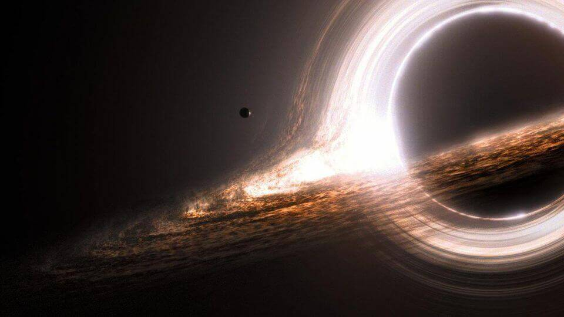

SPACETASTIC
SPACE IS
FULL LIFE CYCLE OF A STAR
1. NEBULA
The life cycle of a star starts with a very big cloud of gas, called nebula(see in the above picture). From a nebula, thousands and thousands of star are made, and this count can also go to even lakhs and crores. A nebula is spread in light years. It is mainly made up of Hydrogen gas and some amount of cosmic dust particles. Slowly and steadly, the Hydrogen gas starts coming closer to each other due to gravity.
2. NUCLEAR FUSION
The next stage after the nebula is the nuclear fusion. In this stage, a very large and spherical mass of Hydrogen gas accumulates together, resulting in a very high pressure at the center. This pressure is enough to fuse two atoms of Hydrogen into one atom of Helium (see above picture). During this fusion, a very very very large amount of heat is generated. Due to this large amount of heat, the matter of the star is at the plasma state. (Plasma is formed when a large amount of heat or electricity makes the electrons to move out from the atom and move freely.). The Hydrogen to Helium fusion continiues until the whole star is made up of Helium. This type of stars are called 'main sequence star', our sun is also a main sequence star, that is, it is now fusing Hydrogen to make Helium. As the fusion continiues, the star size becomes more and more big because the energy released by fusion pushses the star from inside, but this process is very slow, so we cannot see our sun swelling up. In many small and average size stars, (like our sun) there is not sufficient pressure to further fuse the Helium so in small and average size stars, the fusion stops here. In the large size stars, there is so much sufficient pressure to further fuse the Helium. So, in large stars, Helium fuses to lithium, lithium to beryllium, beryllium to boron and so on until the iron fuses, after iron, more fusion is not possible, so the nuclear fusion stops at here.
3. SUPERNOVA
before:
after:
While the fusion process was going, the force generated by the fusion and the gravitational force balanced each other (see the above picture). But now the force generated by the fusion is absent, so the gravitational force of the star pulls itself towards it's center (see the above picture) and there is no opposing force to stop this collapsing, so the star goes on collapsing. And if we take example of a balloon, when so much force is applied, it explosion, same happens with the star, a very very very powerful explosion takes place, known as supernova explosion. A very large amount of energy is released in this explosion, this energy cannot be generated by the same star in it's whole life! The temperature can reach upto 1,000,000,000 (1 billion) degree Celsius. A "Gamma Ray Burst" also takes place sometimes. This Gamma Ray Burst is enough powerful to destroy many planets. (Gamma ray Burst is also a very big topic, I will make article on it soon). A supernova may also damage the Earth even if it is light years away!
While the fusion process was going, the force generated by the fusion and the gravitational force balanced each other (see the above picture). But now the force generated by the fusion is absent, so the gravitational force of the star pulls itself towards it's center (see the above picture) and there is no opposing force to stop this collapsing, so the star goes on collapsing. And if we take example of a balloon, when so much force is applied, it explosion, same happens with the star, a very very very powerful explosion takes place, known as supernova explosion. A very large amount of energy is released in this explosion, this energy cannot be generated by the same star in it's whole life! The temperature can reach upto 1,000,000,000 (1 billion) degree Celsius. A "Gamma Ray Burst" also takes place sometimes. This Gamma Ray Burst is enough powerful to destroy many planets. (Gamma ray Burst is also a very big topic, I will make article on it soon). A supernova may also damage the Earth even if it is light years away!
3. FUTURE OF THE STAR DEPENDING ON IT'S MASS
After the explosion, there may be three possibilities that what the star would be. The possibilities are : white Dwarf, Neutron Star, Black holes.
After the explosion, there may be three possibilities that what the star would be. The possibilities are : white Dwarf, Neutron Star, Black holes.
3.1. WHITE DWARF
White Dwarf, as suggested by the name, it is a dwarf means small, It is almost the size of our Earth. When a small or medium size goes under supernova (like our sun), it forms a small nebula around itself and only the core remains which is very small and but very very dense. And just for comparision, if we take one spoon matter of a white dwarf, it would weight as much as many buildings! It burns its fuel like a LPG stove and lasts for millions of years. (This is a very big topic, so we will discuss it some other day.)
White Dwarf, as suggested by the name, it is a dwarf means small, It is almost the size of our Earth. When a small or medium size goes under supernova (like our sun), it forms a small nebula around itself and only the core remains which is very small and but very very dense. And just for comparision, if we take one spoon matter of a white dwarf, it would weight as much as many buildings! It burns its fuel like a LPG stove and lasts for millions of years. (This is a very big topic, so we will discuss it some other day.)
3.2. NEUTRON STAR
Neuton star are formed when a very massive star undergoes supernova explosion and collapses into a very small size about 10km to 25km. But never underestimate it from it's size, because only this 10km object has the full mass of the star before the explosion so it is way more dense than the white dwarf, it's just one spoon amount would weight as much as our moon! Their magnetic fields are billion times stronger than the Earth's magnetic field. They spin very very fast, almost 3,000 (three thousand) times in one second. But this is nothing in front of our upcoming dead star. (This is a very big topic, so we will discuss it some other day.)
Neuton star are formed when a very massive star undergoes supernova explosion and collapses into a very small size about 10km to 25km. But never underestimate it from it's size, because only this 10km object has the full mass of the star before the explosion so it is way more dense than the white dwarf, it's just one spoon amount would weight as much as our moon! Their magnetic fields are billion times stronger than the Earth's magnetic field. They spin very very fast, almost 3,000 (three thousand) times in one second. But this is nothing in front of our upcoming dead star. (This is a very big topic, so we will discuss it some other day.)
3.2. BLACK HOLE

Black holes are also when massive stars die, these black holes which are formed by the stars are called steller black holes. Steller black holes are very common in our galaxy. Steller black hole are around 25 to 50 solar mass.(1 solar mass = mass of our sun.) They spin way more fast than the neutron stars almost 100,000 (1 lakh) times in a second. Their density is considered to be infinite because their whole body is collapsed into a relatively very small volume. And just for comparision, if we want to make the Himalayas a black hole, we have to compress it until it reaches the size of five hydrogen atoms (This is a very big topic, so we will discuss it some other day.)
Hope you like the artilce please comment below!!
Black holes are also when massive stars die, these black holes which are formed by the stars are called steller black holes. Steller black holes are very common in our galaxy. Steller black hole are around 25 to 50 solar mass.(1 solar mass = mass of our sun.) They spin way more fast than the neutron stars almost 100,000 (1 lakh) times in a second. Their density is considered to be infinite because their whole body is collapsed into a relatively very small volume. And just for comparision, if we want to make the Himalayas a black hole, we have to compress it until it reaches the size of five hydrogen atoms (This is a very big topic, so we will discuss it some other day.)
Hope you like the artilce please comment below!!